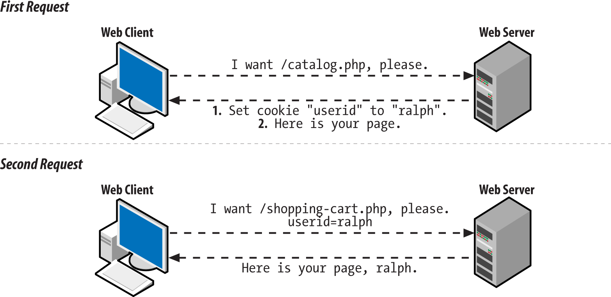
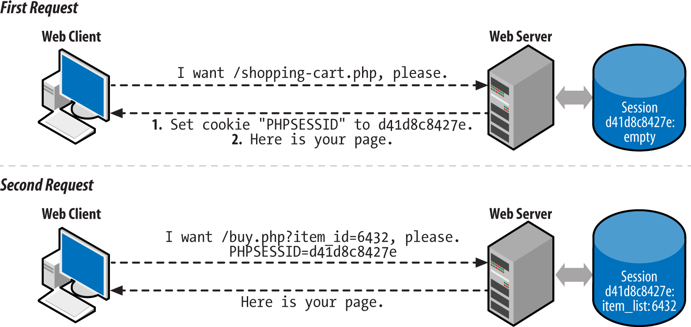

Duración y criterios de evaluación
Variables de servidor
PHP almacena la información del servidor y de las peticiones HTTP en seis arrays globales:
$_ENV: información sobre las variables de entorno.$_GET: parámetros enviados en la petición GET.$_POST: parámetros enviados en el envio POST.$_COOKIE: contiene las cookies de la petición, las claves del array son los nombres de las cookies.$_SERVER: información sobre el servidor.$_FILES: información sobre los ficheros cargados via upload.
Si nos centramos en el array $_SERVER podemos consultar las siguientes propiedades:
PHP_SELF: nombre del script ejecutado, relativo al document root (p.e.:/tienda/carrito.php).SERVER_SOFTWARE: (p.e.:Apache).SERVER_NAME: dominio, alias DNS (p.e.:www.elche.es).REQUEST_METHOD: GET.REQUEST_URI: URI, sin el dominio.QUERY_STRING: todo lo que va después de?en la URL (p.e.:heroe=Batman&nombre=Bruce).
Más información en https://www.php.net/manual/es/reserved.variables.server.php.
Otras propiedades relacionadas:
PATH_INFO: ruta extra tras la petición (p.e.: si la URL eshttp://www.php.com/php/pathInfo.php/algo/cosa?foo=bar, entonces$_SERVER['PATH_INFO']será/algo/cosa).REMOTE_HOST: hostname que hizo la petición.REMOTE_ADDR: IP del cliente.AUTH_TYPE: tipo de autenticación (p.ej:Basic).REMOTE_USER: nombre del usuario autenticado.
Apache crea una clave para cada cabecera HTTP, en mayúsculas y sustituyendo los guiones por subrayados:
HTTP_USER_AGENT: agente (navegador).HTTP_REFERER: página desde la que se hizo la petición.
| PHP | |
|---|---|
Formularios
A la hora de enviar un formulario, debemos tener claro cuando usar GET o POST:
- GET: los parámetros se pasan en la URL.
- <2048 caracteres, sólo ASCII.
- Permite almacenar la dirección completa (marcador / historial).
- Idempotente: dos llamadas con los mismos datos siempre debe dar el mismo resultado.
- El navegador puede cachear las llamadas.
- POST: parámetros ocultos (no encriptados).
- Sin límite de datos, permite datos binarios.
- No se pueden cachear.
- No idempotente → actualizar la BBDD.
Así pues, para recoger los datos accederemos al array dependiendo del método del formulario que nos ha invocado:
Para los siguientes apartados nos vamos a basar en el siguiente ejemplo:
Validación
Respecto a la validación, es conveniente siempre hacer validación doble:
- En el cliente mediante JS.
- En servidor, antes de llamar a negocio, es conveniente volver a validar los datos.
| PHP | |
|---|---|
Librerías de validación
Existen diversas librerías que facilitan la validación de los formularios, como son respect/validation o particle/validator. Cuando estudiemos Laravel profundizaremos en la validación de forma declarativa.
Parámetros multivalor
Existen elementos HTML que envían varios valores:
select multiplecheckbox
Para recoger los datos, el nombre del elemento debe ser un array.
De manera que luego al recoger los datos:
| PHP | |
|---|---|
Volviendo a rellenar un formulario
Un sticky form es un formulario que recuerda sus valores. Para ello, hemos de rellenar los atributos value de los elementos HTML con la información que contenían:
Subiendo archivos
Se almacenan en el servidor en el array $_FILES con el nombre del campo del tipo file del formulario.
| PHP | |
|---|---|
Configuración en php.ini:
file_uploads: on / off.upload_max_filesize: 2M.upload_tmp_dir: directorio temporal. No es necesario configurarlo, cogerá el predeterminado del sistema.post_max_size: tamaño máximo de los datos POST. Debe ser mayor a upload_max_filesize.max_file_uploads: número máximo de archivos que se pueden cargar a la vez.max_input_time: tiempo máximo empleado en la carga (GET/POST y upload → normalmente se configura en 60).memory_limit: 128M.max_execution_time: tiempo de ejecución de un script (no tiene en cuenta el upload).
Veamos de qué información disponemos en el array $_FILES para una imagen llamada 'saludo.jpg' subida mediante nuestro formulario:
| PHP | |
|---|---|
Mediante estos echo's se ha accedido a toda la información disponible del fichero en PHP. La información impresa sería la siguiente:
Para cargar los archivos, accedemos al array $_FILES:
Cada archivo cargado en $_FILES tiene:
name: nombre.tmp_name: nombre temporal asignado al fichero por el servidor. Este nombre es único y permite identificarlo dentro de la carpeta de temporales.size: tamaño en bytes.type: tipo MIME.error: código de error de la subida, en nuestro caso 0 o UPLOAD_ERR_OK que indica que no se ha producido error alguno. Códigos de error subida de fichero.
Filtrado con php de tipos de ficheros subidos con html
Una vez sabemos cómo acceder a la información de los ficheros subidos, vamos a centrarnos en el filtrado de los tipos de ficheros aceptados. Limitar el tipo de fichero subido es altamente recomendable para evitar posibles problemas de seguridad.
Para este ejemplo voy comprobar que la imagen súbida sea en efecto una imagen con una de las extensiones más comunes y que su tamaño sea menor a 1 MB:
| PHP | |
|---|---|
Escritura de imágenes en carpeta del servidor
Una vez tengamos nuestros ficheros filtrados vamos a proceder a guardarlos de forma permanente en una carpeta de nuestro servidor.
Las imagenes o ficheros subidos mediante los formularios HTML son almacenados siempre en una carpeta temporal del sistema, por lo tanto deberemos moverlos para poder guardarlos permanentemente.
Para trasladar los ficheros de la carpeta temporal directamente a nuestra carpeta elegida usaremos la función move_uploaded_file( origen, destino ).
El siguiente ejemplo sería un script alojado en la carpeta raiz de nuestra web, p.e. index.php:
- El nombre temporal del fichero subido, que se encuentra en la carpeta de temporales, en
$ruta_fichero_origen. - La ruta completa de destino del fichero, que se compone por una parte de la ruta raiz del script donde estamos trabajando (estamos programando en index.php) más el nombre de la carpeta que se ha creado para guardar las imagenes (/uploads) y por último el nombre definitivo que tendrá el fichero (el nombre original del fichero).
Seguridad de escritura de imagenes en carpeta del servidor
Al guardar los archivos subidos por los usuarios en nuestro servidor, puede ocurrir que no filtremos los ficheros introducidos, o guardemos ficheros susceptibles de provocar problemas de seguridad. Para evitar problemas de este tipo lo mejor será incluir en la carpeta donde los almacenamos un pequeño script htaccess que evite la ejecución de código:
| Bash | |
|---|---|
Con estas dos líneas en un fichero con extensión .htaccess evitaremos una posible ejecución de código por parte de usuarios malintencionados. Recuerda que debes incluir este fichero en la misma carpeta donde almacenas los ficheros.
Y ya está, con esto tendríamos terminado un formulario para subir imagenes con php totalmente funcional, con comprobaciones de seguridad para evitar subidas de ficheros inesperadas que puedan provocar problemas o hackeos inesperados.
Extra 1: mostrar imagenes subidas con html
Mostrar las imagenes guardadas en nuestra carpeta de almacenamiento es sencillo, tan solo deberemos incluir la ruta hasta el fichero en una etiqueta IMG html:
| PHP | |
|---|---|
Extra 2: descargar ficheros subidos con html
Si queremos incluir un enlace de descarga para el fichero almacenado, en vez de utilizar una etiqueta IMG usaremos una etiqueta para enlaces con el atributo HREF la ruta al fichero:
| PHP | |
|---|---|
Este enlace producirá que el usuario descargue el fichero en cuestión, no obstante si el archivo es por ejemplo una imagen o pdf, el usuario en vez de lograr una descarga directa visualizará el contenido, teniendo que descargarlo haciendo uso de la opción descargar del menú desplegable con clic derecho.
Evitar la visualización de ficheros es posible gracias a HTML5 y los navegadores más modernos: Chrome, Firefox, Opera. Deberemos incluir el atributo download en la etiqueta de enlace anterior (A), así, el enlace final para una descarga forzada quedaría así:
| PHP | |
|---|---|
Cabeceras de respuesta
Se devuelven mediante la función header(cadena). Mediante las cabeceras podemos configurar el tipo de contenido, tiempo de expiración, redireccionar el navegador, especificar errores HTTP, etc.
Debe ser lo primero a devolver
El motivo es que en cuando un programa genera contenido HTML, el servidor genera automáticamente la información de estado y los campos de cabecera y a continuación envía el contenido generado. Si después el programa contiene una instrucción header(), se produce un error porque las cabeceras ya se han enviado (ni siquiera deja una linea en blanco).
| PHP | |
|---|---|
Inspeccionando las cabeceras
Se puede comprobar en las herramientas del desarrollador de los navegadores web mediante Developer Tools → Network → Headers.
Es muy común configurar las cabeceras para evitar consultas a la caché o provocar su renovación:
Gestión de estado
HTTP es un protocolo stateless, sin estado. Por ello, se simula el estado mediante el uso de cookies, tokens o la sesión. El estado es necesario para procesos tales como el carrito de la compra, operaciones asociadas a un usuario, etc... El mecanismo de PHP para gestionar la sesión emplea cookies de forma interna. Las cookies se almacenan en el navegador, y la sesión en el servidor web.
Cookies
Las cookies se almacenan en el array global $_COOKIE. Lo que coloquemos dentro del array, se guardará en el cliente. Hay que tener presente que el cliente puede no querer almacenarlas.
Existe una limitació de 20 cookies por dominio y 300 en total en el navegador.
En PHP, para crear una cookie se utiliza la función setcookie:
| PHP | |
|---|---|
Destacar que el nombre no puede contener espacios ni el caracter ;. Respecto al contenido de la cookie, no puede superar los 4 KB.
Por ejemplo, mediante cookies podemos comprobar la cantidad de visitas diferentes que realiza un usuario:
| PHP | |
|---|---|
Inspeccionando las cookies
Si queremos ver que contienen las cookies que tenemos almacenadas en el navegador, se puede comprobar su valor en Dev Tools → Application → Storage
Ejemplo de cookies
1) vamos a realizar un fichero html (cookiesEjemplo1.html) en el que:

2) Creamos fichero cookiesEjemplo1.php en el que comprueba si se ha enviado el parámetro idioma, si es así, crea una cookie de nombre idioma, valor $_GET['idioma'], tiempo 1 hora y que trabaja desde la raíz \.
Además, se ha añadido una cabecera que redireccionará a la página cookiesEjemplo1_b.php:
| PHP | |
|---|---|
3) En el fichero cookiesEjemplo1_b.php se comprueba el valor de la cookie idioma:
4) El fichero, por ejemplo, cookiesEjemplo1Va.php quedaría:
El tiempo de vida de las cookies puede ser tan largo como el sitio web en el que residen. Ellas seguirán ahí, incluso si el navegador está cerrado o abierto.
Para borrar una cookie se puede poner que expiren en el pasado:
O que caduquen dentro de un periodo de tiempo determinado:
Ejemplo 2
Siguiendo con el ejemplo anterior de idiomas, podríamos crear el fichero cookiesEjemplo2BorrarCookies.php y, desde ahí, eliminar la cookie idioma:

Se utilizan para:
- Recordar los inicios de sesión.
- Almacenar valores temporales de usuario.
- Si un usuario está navegando por una lista paginada de artículos, ordenados de cierta manera, podemos almacenar el ajuste de la clasificación.
La alternativa en el cliente para almacenar información en el navegador es el objeto LocalStorage.
Sesión
La sesión añade la gestión del estado a HTTP, almacenando en este caso la información en el servidor. Cada visitante tiene un ID de sesión único, el cual por defecto se almacena en una cookie denominada PHPSESSID. Si el cliente no tiene las cookies activas, el ID se propaga en cada URL dentro del mismo dominio. Cada sesión tiene asociado un almacén de datos mediante el array global $_SESSION en el cual podemos almacenar y recuperar información.
La sesión comienza al ejecutar un script PHP. Se genera un nuevo ID y se cargan los datos del almacén:

El trabajo con sesiones tiene tres partes:
- Creación o apertura de la sesión:
Cuando alguna página crea una sesión utilizando la cabecera session_start();(recuerda que las cabeceras deben ir justo después de <?php), el servidor asocia al navegador del usuario un identificador de usuario único. El identificador se guarda en el usuario en forma de cookie o, si el navegador del usuario no permite la creación de cookies, añadiendo el identificador en la dirección de la página.
- Utilización de la sesión:
Si ya se ha creado la sesión, las páginas solicitadas por el mismo navegador pueden guardar y recuperar información en el servidor, información que se asocia al identificador de usuario, por lo que no es accesible a otros usuarios. La información se conserva hasta que el usuario o el servidor destruyan la sesión.
- Destrucción o cierre de la sesión:
Tanto el usuario como el servidor pueden cerrar la sesión. El usuario puede destruir la sesión cerrando el navegador. El servidor puede destruir la sesión cuando alguna página utilice la función session_destroy(); o al cabo de un tiempo determinado (definido mediante la función session_set_cookie_params()).
Las operaciones que podemos realizar con la sesión son:
| PHP | |
|---|---|
Vamos a ver mediante un ejemplo cómo podemos insertar en un página datos en la sesión para posteriormente en otra página acceder a esos datos. Por ejemplo, en sesion1.php tendríamos:
| PHP | |
|---|---|
Y posteriormente podemos acceder a la sesión en sesion2.php:
| PHP | |
|---|---|
Configurando la sesión en php.ini
SiguLas siguientes propiedades de php.ini permiten configurar algunos aspectos de la sesión:
- session.save_handler: controlador que gestiona cómo se almacena (valor files).
- session.save_path: ruta donde se almacenan los archivos con los datos (si tenemos un cluster, podríamos usar /mnt/sessions en todos los servidores de manera que apuntan a una carpeta compartida).
- session.name: nombre de la sesión (PHSESSID).
- session.auto_start: Se puede hacer que se autocargue con cada script. Por defecto está deshabilitado.
- session.cookie_lifetime: tiempo de vida por defecto.
Más información en la documentación oficial.
Cookie VS session
Las sesiones no deben confundirse con las cookies. Las cookies es un método que permite guardar información en el ordenador del cliente para recuperarla en el futuro; mientras que en las sesiones la información se mantiene en el servidor hasta que se cierra la sesión (por intervención del usuario o por tiempo). En el manual de PHP se ofrece un capítulo dedicado a las sesiones.
Ejemplo
He aquí un ejemplo gráfico de utilización de sesiones. Programa de dos páginas que muestra gráficamente los votos recogidos por dos opciones.
- La primera página contiene un formulario con tres botones de tipo submit con el mismo atributo name.
- Dos botones permiten votar a una u otra opción.
- El tercer botón pone a cero los contadores de votos.
- La segunda página recibe el dato, modifica la variable de sesión que contiene el número de votos de la opción elegida (o ambas) y redirige a la primera página.
- Los dos números se guardan en dos variables de sesión. Si las variables de sesión no están definidas, se les dará el valor 0.
- Las franjas correspondientes a los votos se alargan de 10px en 10px y no tienen límite de tamaño.
| Text Only | |
|---|---|
1 | |
Autenticación de usuarios
Una sesión establece una relación anónima con un usuario particular, de manera que podemos saber si es el mismo usuario entre dos peticiones distintas. Si preparamos un sistema de login, podremos saber quién utiliza nuestra aplicación.
Para ello, preparemos un sencillo sistema de autenticación:
- Mostrar el formulario login/password.
- Comprobar los datos enviados.
- Añadir el login a la sesión.
- Comprobar el login en la sesión para realizar tareas específicas del usuario.
- Eliminar el login de la sesión cuando el usuario la cierra.
Vamos a ver en código cada paso del proceso. Comenzamos con el archivo index.php:
Al hacer submit nos lleva a login.php, el cual hace de controlador:
Dependiendo del usuario que se haya logueado, vamos a ir a una vista o a otra. Por ejemplo, en main.php tendríamos:
Finalmente, necesitamos la opción de cerrar la sesión que colocamos en logout.php:
| PHP | |
|---|---|
Autenticación en producción"
En la actualidad la autenticación de usuario no se realiza gestionando la sesión directamente, sino que se realiza mediante algún framekwork que abstrae todo el proceso o la integración de mecanismos de autenticación tipo OAuth, como estudiaremos en la última unidad mediante Laravel.